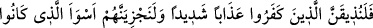

(__WORD__), ‘boş ve değersiz söz’ demektir. Yani Kur’ân okunduğu zaman siz bir takım
hurâfe hezeyân ve boş lakırdılar yapın, Rüstem ve İsfendiyar’ın kıssa ve romanlarını
anlatın, şiir ve şarkı söyleyerek ıslık çalıp el çırparak sesinizi yükseltin ki, okuyan ve
dinleyenlerin zihinlerini bulandırın!
“Umulur ki bastırırsınız, dediler.” Yani belki böylece bir üstünlük sağlayabilirsiniz;
yoksa bunlarla başa çıkamazsınız. İşte böylece okuyan okumayı bırakır, insanlar da
Kur’ân’ı dinleyememiş olurlar.
Kâfirler bu gürültü ve kargaşa ile Müslümanlara eziyet etmek istemişlerdir. Ayrıca
insanlar Kur’ân’ı dinlediklerinde Kur’ân’a inanacaklarından dolayı endişe etmişlerdir.
Genelde Ebû Cehil ve arkadaşlarının durumu bu idi.
Bu âyetin işârî yorumu şöyledir: Azgın nefisler boş ve bâtıl kuruntular üretip sürekli
bir şeyler fısıldayarak Rabbânî ilhamlara kulak vermekten kalpleri meşgul ederek
hükümran olmak ister. Hâlbuki azgın nefis, gayb sırlarını dinlemeye dalan kişinin
Allah’tan başka kimseden haberi olmadığını, nefsin fısıltılarının ona tesir etmediğini
bilmez.
27. O inkâr edenlere şiddetli bir azâbı tattıracağız ve onları yaptıklarının en
kötüsüyle cezalandıracağız.
Allah’a yemin olsun ki, ‘bu Kur’ân’ı dinlemeyin, okunduğunda gürültü edin’ diyenlere
yahut bütün “o inkâr edenlere” -ki bu yaygara koparanlar öncelikle bunlara dâhildirler-
miktarı ölçülemeyen “şiddetli bir azâbı tattıracağız.” Çünkü bir şeyi tatmak deneme
için az bir miktarda gerçekleşir. Az olanı dahi böyle şiddetli olunca, bunun sonrası ona
göre düşünülmelidir.
Bu âyetin işârî bir yorumu da şudur: Allah Teâlâ nûruyla kalplere tecellî ettiği zaman
onların kötü sıfatlarını yakıp yok ederek azap eder. Bu durum İslam ülkesinde gayr-i
müslimlerin müslümanlara cizye ve haraç vermesi gibidir. Nasıl ki müslümanlar bu
anlaşmada gayr-i müslimlerin eziyet ve zararlarından emin oluyorlarsa aynı şekilde
kalpler de nefislerle beraber barış içinde yaşarlar. Çünkü îman ve teslîmiyetle artık
inkâr ve itiraz bulunmaz.
“Ve onları yaptıklarının en kötüsüyle cezâlandıracağız.” Hadd-i zâtında çok kötü
olan amellerinin kötülükleriyle onları cezalandıracağız. İşte amelleri böyle çok kötü
olunca cezası da aynı şekilde kötü olacaktır. Burada en kötü (esve’) kelimesinden
mutlak bir fazlalık kasdedilmiş olup beyân ve tahsis için amele izâfe edilmekle isim
tamlaması şeklinde arz edilmiştir. Abdullah b. Abbas (r.a.)’dan rivâyet edildiğine göre
bu şiddetli azap Bedir’de gerçekleşmiştir. Yaptıklarının en kötüsüyle cezalandırılmaları